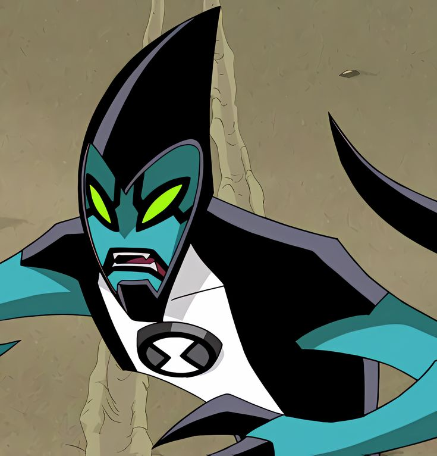

XLR8
XLR8 (XL8 en España) es la muestra de ADN de un kineceleran del planeta Kinet en el Omnitrix.
XLR8 se asemeja a un velociraptor semi-blindado. Tiene orbes negros en los pies y usa un casco negro en forma de cono con una visera protectora deslizante (que es parte de su biologia kineceleran y no mecanica).2 Su visera esta formada por su piel y parte de su craneo.3 Siempre que se levanta la visera, se puede ver su rostro azul, ojos verdes, labios negros y rayas debajo y entre sus ojos; el resto de las caracteristicas de su cabeza se desconocen. XLR8 tiene cinco rayas azules en la cola y usa pantalones negros y una camisa de cuello alto con una raya blanca en el centro.
En Ben 10: Omniverse, XLR8 ahora es mas alto y el color blanco de su camisa se reemplaza por el verde, que ahora cubre todo su cuello. Tiene cuatro rayas azules en la cola, los orbes negros en sus pies son mas grandes, su casco es mas largo en la parte trasera y delantera, sus garras son mas largas y su visera es mas oscura.
El XLR8 de 11 años en Omniverse se ve exactamente igual que su yo de 16 años, excepto que es mas bajo y el color verde de su camisa es blanco. Tiene tres rayas en la cola.
